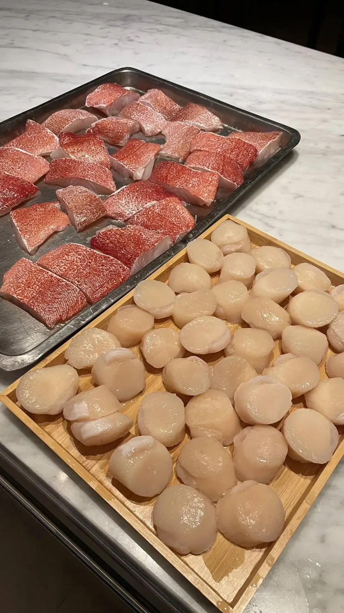

一道上桌的菜，背後往往經過許多次的調整。它不是憑空出現的靈感，而是由場合、食材與技法一步步推導出來的結果。
最後更新：2026 年 10 月 11 日
設計菜色前，先確認這是一場什麼樣的聚會：家宴、商務接待還是紀念日？賓客的年齡、飲食限制與偏好是什麼？這些條件決定了菜色的方向，也避免做出好看卻不適合的菜。
以當季、品質穩定的食材作為主角，再決定它最適合的烹調方式。主角確定後，其他的元素都是為了讓它更突出。
思考這道菜缺什麼：需要酸來解膩，還是需要脆口的元素增加變化？把味道、口感、溫度與色彩在腦中排列一次，再決定配菜與醬汁。
紙上的構想要經過實際試做才能確認。調整的重點通常是份量、鹹度與火候，也要考慮在現場是否能穩定重現，特別是到府服務，現場設備與家用廚房條件都需要納入評估。
擺盤要兼顧視覺與實用，出餐則要考慮動線與時間。菜色再好，出餐太慢或溫度不對，體驗也會打折。
最後要把這道菜放回整份菜單，檢查是否與前後菜色重複、濃淡是否有節奏。想了解如何規劃整場，可參考私廚如何安排上菜順序。
依複雜度而定，簡單的菜色可能幾次試做就能定案，複雜的菜色則需要反覆調整味道、份量與擺盤。
到府現場要考慮家用廚房條件、設備與動線，所以菜色設計要能在現場穩定重現，並兼顧出餐節奏。
可以。提供人數、預算、場合與飲食限制，主廚會據此設計菜單，也可以提出想吃的菜色或食材。
提供活動日期、人數與場地，我們將提供最適合的私廚方案與報價建議。